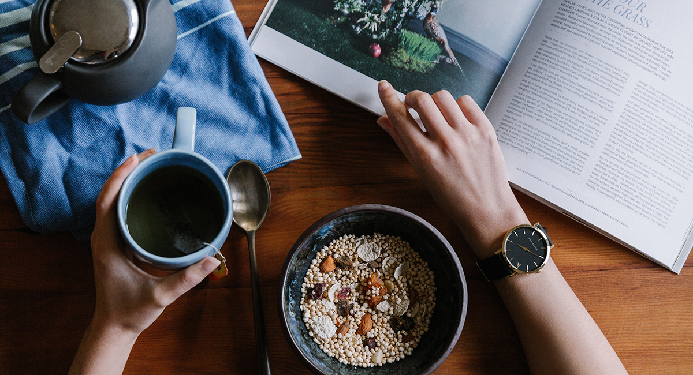

홈 >
브랜드 >
닥터유
닥터유

‘닥터유’ 는 서울대병원 가정의학과 유태우 박사팀과 함께
현대인의 식습관을 고려해 탄생한 뉴트리션 브랜드입니다.
몸에 안 좋은 성분은 빼고 탄수화물, 단백질, 지방의 균형을
맞추어 맛있으면서도 건강에 좋은 과자를 만들었습니다.
당신의 건강을 설계합니다
-
BALANCE
- 빼고, 더하기
-
몸에 좋지 않은 성분들은 빼고 현대인의 라이프스타일을
고려해 부족한 영양소를 더해 영양 밸런스를 맞췄습니다.
-
EXPERT
- 영양전문가와 함께한 닥터유 프로젝트
-
"건강과 맛이라는 두 마리 토끼를 잡기란
쉬운 일이 아니었습니다. 저희의 성과는
좋은 과자를 만들어냈다는 것보다
식품을 만드는 사람들이 의사의
마음을 갖도록 바꿔놨다는 겁니다."
- 서울대 가정의학과 유태우 박사 -
-
JUMP
- 영양 과자에서 기능성 식품으로
-
기존 영양 설계 과자에서 기능성 표시 식품군으로
급변하는 소비자 니즈에 맞추어 나아갑니다.